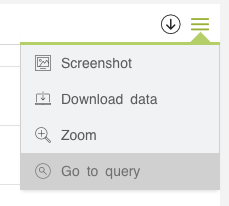

The Devo Applications Builder allows queries to any source. However, generally the queries are made directly to data stored our platform. These queries are made through the Devo Query API.
In applications, the queries are defined in the src/resources/requests.js
file.
Devo Query API requests
The queries using the API are expresseds in LINQ. If you need to know more information about how build a query using LINQ language, go to our public documentation. The authentication of the applications with the Query API is delegated to Devo Applications Data Library, you will not have to worry about it.
A simple query will look like the following:
from demo.ecommerce.data select *
The Request class
The Request class is the main one to create a request in Devo Applications Builder. However, in applications it is common to use other classes, which inherit from this one, to make requests.
Simple query request
To create a simple request, we must create an instance of class RequestApi. Visit the Devo Applications Data Library documentation for more information.
import RequestApi from '@devoinc/applications-data-library/requests/RequestApi';
import dateRange from '@devoinc/applications-builder/utils/dateRange';
..
let request = new RequestApi({
query: 'from demo.ecommerce.data select *',
dates: dateRange.fromNow(1, 'day'),
});
Method dateRange is a Devo Applications Builder utility for managing dates.
However, you can use custom dates for a query. You just have to declare an object with the from and the to timestamp values of the date period you want to make the request.
import RequestApi from '@devoinc/applications-data-library/requests/RequestApi';
import dateRange from '@devoinc/applications-builder/utils/dateRange';
..
let request = new RequestApi({
query: 'from demo.ecommerce.data select *',
dates: {
from: moment('01/01/2020').valueOf(),
to: moment('02/01/2020').valueOf()
},
});
Simulate query request
Sometimes you can simulate a request for testing purposes and simultae a normal request. Instead of request to the API, you need to load a JSON object locally.
To simulate a request, use the RequestApiMock class.
import RequestApiMock from '@devoinc/applications-data-library/requests/RequestApiMock';
let data = {
m: {
eventdate: { type: 'timestamp', index: 0 },
count: { type: 'int8', index: 1 },
},
d: [
[1551916800000, 21520],
[1552003200000, 551753],
[1552089600000, 552003],
[1552176000000, 551988],
[1552262400000, 551497],
[1552348800000, 551307],
[1552435200000, 551290],
[1552521600000, 551193],
[1552608000000, 551580],
],
};
let request = new RequestApiMock({
results: data,
delay: 1000,
});
Queries request in sequence
Sometimes you will need a widget to display the data resulting from a series of requests and operations. The RequestChain class allows these types of requests to be made.
The RequestChain receives an array of a mix of functions and Request object that will be executed sequenctially.
import RequestApi from '@devoinc/applications-data-library/requests/RequestApi';
import RequestChain from '@devoinc/applications-data-library/requests/RequestChain';
import dateRange from '@devoinc/applications-builder/utils/dateRange';
..
let request = new RequestChain([
new RequestApi({
template: `from demo.ecommerce.data
group by method
select count() as count`,
dates: dateRange.fromNow(1, 'day')
}),
(data) => {
return {
methods:
JSON.stringify(Array.from(new Set(data.object.map(i => i.method))))
};
},
new RequestApi({
template: `from siem.logtrust.web.activity
where method in {{methods}}
group by hostname
select count() as count`,
dates: dateRange.fromNow(1, 'day')
}),
]);
Each query on Request object should be declarated as a
template.
Request cache
By default, the request has a mechanism for buffering the result data. This prevents to call the request twice with the same parameters.
If the application does not need this functionallity (in case of too much memory taken or if the result of the query changes even if the same params are used) you can disable this behaviour:
requests.add(
'requestKey',
new RequestApi({
query: 'from demo.ecommerce.data select *',
dates: dateRange.fromNow(1, 'day'),
cache: false,
})
);
Queries templates
Sometimes a query needs to change over the time, but only in some fields. For example, make a query that depends on a selector with the names of the methods.
from demo.ecommerce.data where method="{{selectedMethod}}"
In the query, selectedMethod is a value that can be changed by the user. The request object should be like the following code:
let request = new RequestApi({
template: 'from demo.ecommerce.data where method="{{selectedMethod}}',
dates: dateRange.fromNow(1, 'day'),
});
Pay attention to the change of query by template.
Then, in the widget you will need indicate to use the template.
widget.setRequests(requests.get('requestID').parseTemplate({ selectedMethod: 'GET' });
Requests singleton
To reuse the requests between code of the application, Devo Applications Data Library use a Singleton pattern from Devo Applications Builder.
So, in the src/resources/requests.js file each request must be added to the Requests class.
import requests from '@devoinc/applications-builder/data/requests';
import RequestApi from '@devoinc/applications-data-library/requests/RequestApi';
import dateRange from '@devoinc/applications-builder/utils/dateRange';
requests.add(
'requestKey',
new RequestApi({
query: 'from siem.logtrust.web.activity select *',
dates: dateRange.fromNow(1, 'day'),
})
);
Then, you can use it in the widgets or in any other part of the application.
import requests from "@devoinc/applications-builder/data/requests";
...
widget.setRequests([requests.get("requestKey")]);
Launch the query in the Data Search
The application queries can be launched in the Data Search. This option is available in each widget, in the menu on the right side.
However, not all queries are supported. So, in this case the owner of the application should adapt the request for this option.
See the documentation here.
Query to an external API
You can query data from an external resource. The RequestCustom class wraps a custom call into the framework lifecycle.
In this case you will need to create a function that adapts the data to the data structure supported by Devo Applications Data Library.
import RequestApi from '@devoinc/applications-data-library/requests/RequestCustom';
function apiCall(cb) {
$.ajax({
url: 'https://somebigdataplatformnotascoolasdevo/api/resource',
type: 'POST',
data: {
token: '1234567890SuperSecure',
},
success: cb,
});
}
let request = new RequestCustom({
callFn: apiCall,
});
By default, widgets expect data to come in the following format:
{
"m": {
"field1": {"type":"timestamp","index":0},
"field2":{"type":"int8","index":1}
...
},
"d":[
[valueField1, valueField2],
[valueField1, valueField2],
[valueField1, valueField2],
[valueField1, valueField2],
...
]
}